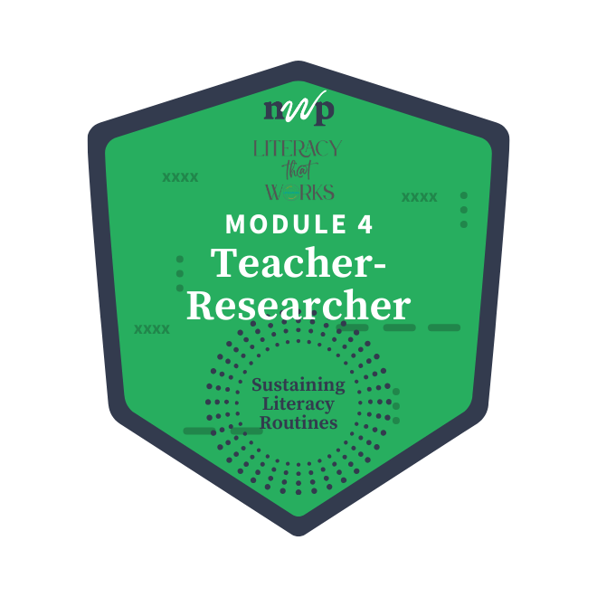

Home

Name: Shannon Tuley
Badge: Teacher as Researcher | Sustaining Literacy Routines
Looking back on this inquiry cycle, what did you learn about your teaching and your students that you might not have noticed otherwise? How did engaging in this teacher-research process shape or shift your thinking about your classroom practice?:
I did not really have any "aha" moments but the teacher-research process shifted my thinking and my approach to teaching writing. I was more intentional and paid more attention to their progress. I also noticed a few things that worked for some students and not others. For example, some struggled with understanding that the texts with different points of view were for giving multple perspectives. I noticed in their writing that they went back and forth with their claims.
Think back to a moment during the lesson sequence that stands out. It could be a comment from a student, an unexpected challenge or success, a shift in engagement, or a moment when your own thinking changed. Describe what happened and why this moment feels meaningful to you now. What does it reveal:
During this process, I was surprised by how many students made positive comments about writing this essay. Quite a few said they were enjoying it throughout the process. Also, some of my weaker writers impressed me with the detail and organization of their writing!
As you look over the drafts your students produced in this lesson sequence, what early patterns, surprises, or questions are emerging for you? What aspects of your students’ writing are you most curious to explore more deeply with colleagues during our April regroup? What, if any, questions do you h:
I did notice that several students got a bit confused during the counterclaim/rebuttal paragraphs. They were breifly taught this in 6th grade but many didn't remember. I retaught it but I am curious to explore that more deeply at the regroup.